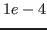
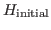
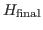

Kohn-Sham density functional theory (K-S DFT) is widely-used for ground-state electronic structure calculations. Its bottleneck is the computation of N occupied eigen-states of a non-linear eigenvalue problem, where N is the number of the electron-pairs. The non-linear eigenvalue problem is solved through a self-consistent-field (SCF) iteration where at each iteration a linear eigenvalue problem is solved.
Due to the large number of electrons in the model problem and the high accuracy (around

relative error) required for K-S DFT, the resulting degrees of freedom in the matrices can range from hundreds of thousands to tens of millions. Furthermore, the condition number of the matrices can be poor depending on the choice of the discretization basis. For real-space based methods such as finite difference or finite elements, the condition number can be in the range of millions for DFT problems that model all the electrons. These characteristics of the DFT problem make it very difficult for conventional iterative eigensolvers to find the wanted eigen-states.Zhou et al. (Journal of Computational Physics, 2006) proposed the Chebyshev-filtered subspace iteration (CheFSI) as a non-linear subspace iteration method to extract the wanted eigen-subspace. CheFSI starts with an initial guess to the wanted eigen-subspace of the initial matrix

, and progressively through the SCF iterations transform it to the wanted eigen-subspace of the final converged matrix
using a Chebyshev-polynomial filter. We propose a Lanczos-filter subspace iteration (LanFSI) that uses an interpolative-polynomial approximation to smeared step function from the Lanczos iteration to filter the wanted eigen-subspace. We observe that for matrices with a large condition number, LanFSI is a more efficient filter than CheFSI. Consequently, LanFSI achieves convergence with fewer SCF iterations than CheFSI using the same polynomial degree in all-electron calculations.